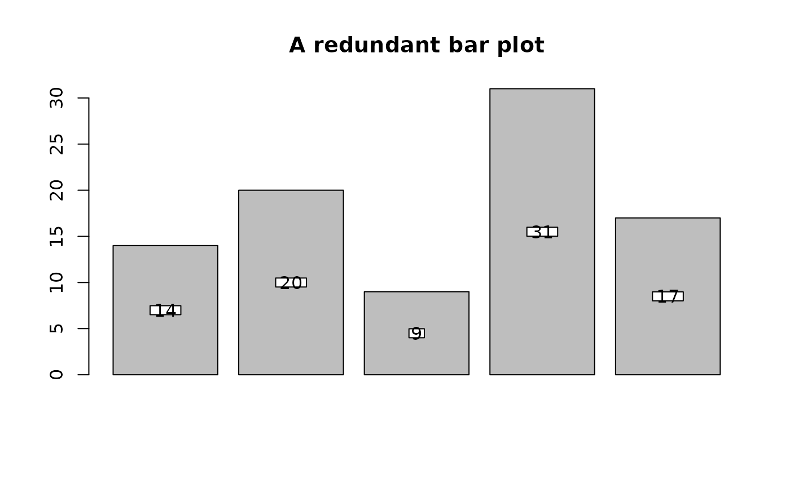
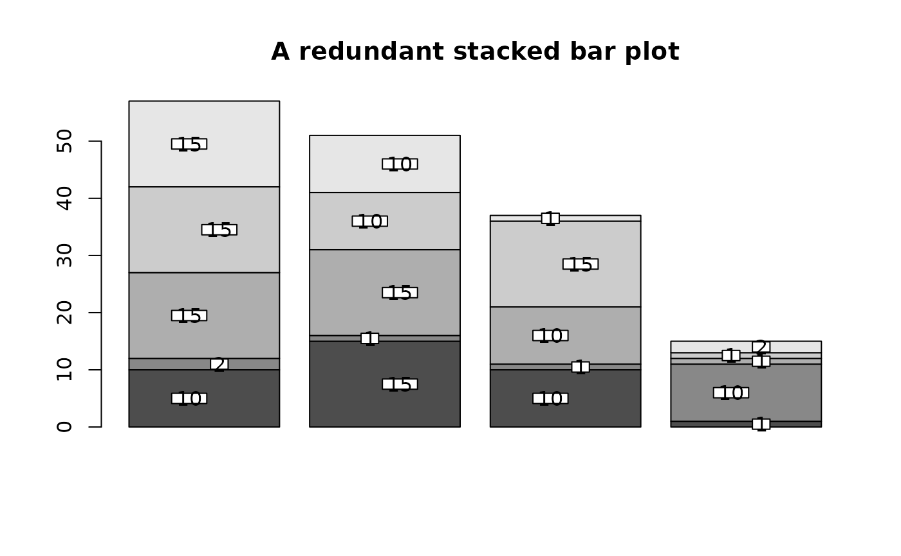
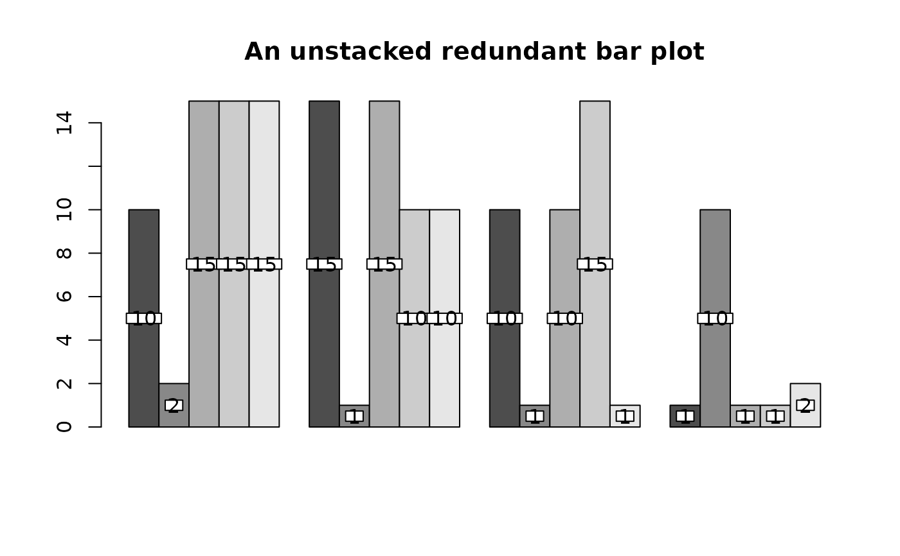
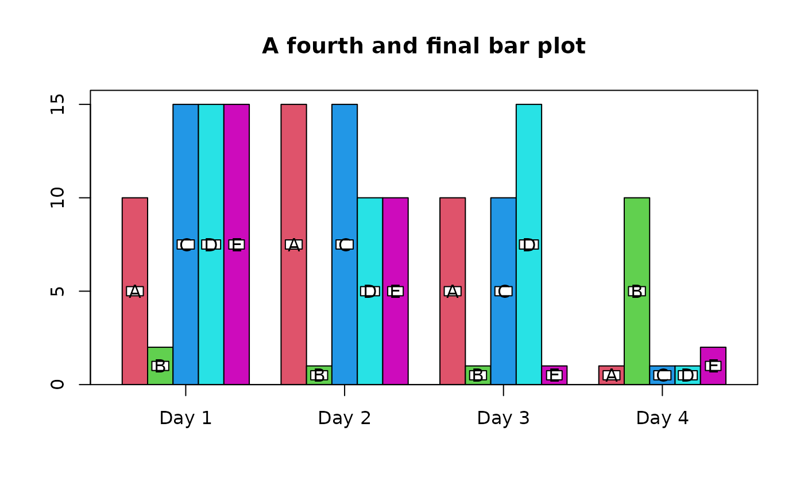

Label the bars on a barplot
barlabels.RdDisplays labels on a plot, usually a bar plot.
Arguments
- xpos
A vector, matrix or data frame of x positions for the labels.
- ypos
A vector, matrix or data frame of y values for the labels.
- labels
The labels to display. Defaults to the values of ypos.
- cex
Relative size of the labels. See text.
- prop
The proportion of ypos at which to place the labels. Defaults to 0.5 (the middle).
- miny
The minimum value at which to display labels.
- offset
Amount to horizontally offset successive labels in case of vertical overlaps.
- nobox
Whether to call boxed.labels or text.
- ...
Extra arguments passed to boxed.labels or text.
Details
barlabels places labels on a plot at horizontal positions xpos and vertical positions ypos * prop. The typical use of this function is to place labels on bars, by default in the middle of the bars.
To put labels just over the tops of the bars, set prop to 1 and add a constant amount to ypos.
Examples
heights<-c(14,20,9,31,17)
barpos<-barplot(heights,main="A redundant bar plot")
# show the usual value labels on the bars
barlabels(barpos,heights)

# now with stacked bars and offsets
heights<-matrix(sample(c(1,2,10,15),20,TRUE),ncol=4)
barpos<-barplot(heights,main="A redundant stacked bar plot")
barlabels(barpos,heights,offset=0.1)

# do it again without stacking
barpos<-barplot(heights,main="An unstacked redundant bar plot",
beside=TRUE)
barlabels(barpos,heights)

# finally use barp for the plot
barpos<-barp(heights,main="A fourth and final bar plot",col=2:6,
names.arg=paste("Day",1:4))
barlabels(barpos$x,barpos$y,matrix(LETTERS[1:5],nrow=5,ncol=4))
